P. Annapurna is a Degree Lecturer in the Department of Telugu. She have successfully qualified for the Junior Research Fellowship (JRF) in Telugu and secured the State First Rank in the TREIRB Gurukula Degree Lecturer (DL) Examination. She Qualified JRF with First rank across the State of Telangana. Together, these accomplishments highlight her dedication to teaching, research, and continuous learning, as well as her passion for preserving, promoting, and advancing Telugu studies through academic and professional engagement.

P. Annapurna
MA,B,ED NET,Ts-SET,JRF
Vuppala Vara Laxmi is a Degree Lecturer in Computer Science. She holds an M.Tech in Computer science from University College of Engineering, Osmania University. She qualified the UGC–NET examination in Computer Science in 2020 and the GATE examination in Computer Science in 2017, and secured the State 16th Rank in the TS-PGECET examination in 2018 in Computer Science.She began her professional career as a Software Engineer with Infosys pvt Ltd, where she completed three months of training as a Software Analyst at the Infosys Global Education centre,Mysuru campus(Feb,2016 to June,2016) duriong which she was trained in several technical subjects including python,.NET, OOPS,DataStructures, RDBMS(SQL).She later worked as a Software Engineer at Hexagon Capability Center India from 2016 to 2018, where she actively contributed to software development and product enhancement activities. During her tenure, she received the Star Award for showing her expertise in successfully upgrading a software product which was built in C++ to C# .NET in EUCW Team in HCCI .Her areas of Interest include Artificial Intelligence and Machine Learning. With a strong blend of Industry Experience and academic achievements , she is committed to guiding students in building strong foundations in computer science.

Vuppala Vara Laxmi
MTech(C.S.E) from O.U, B.E(C.S.E),
(JNTUH),UGC-NET,GATE qualified
A.Vineetha is a Degree Lecturer in Department of Microbiology.She has completed her M.Sc in Microbiology from Osmania University where, She was awarded 2 Gold Medals for academic excellence. She also qualified ICAR-NET(2021), TS-SET(2022) and GATE-XL(2023). She was awarded the Gold Medal in the National Poster Presentation Competition conducted at Osmania University. In addition to this achievement, She secured the State First Rank in the TREIRB Gurukula Degree Lecturer Examination conducted by the Telangana Residential Educational Institutions Recruitment Board. These accomplishments together demonstrate her commitment to intellectual growth, effective communication of knowledge, and sustained pursuit of distinction in both teaching and research-oriented endeavors.

A.Vineetha
M.Sc in Microbiology, ICAR-NET, TSSET, GATE-XL
Santhosha is a faculty in the Department of English. She have 9 years of experience as a Degree Lecturer in TSWREI society. This experience has strengthened her instructional expertise and ability to manage classroom dynamics effectively. She focus on fostering critical thinking, creativity, and professional growth among students. Her efforts aim to support students in preparing for higher education and future careers. Overall, her career reflects a dedication to education, student success, and the mission of the institution she serve.

Santhosha
DL in English
Dr.T.Deepthi working as Degree Lecturer in Statistics, in the Department of Statistics. She have been awarded both Junior Research Fellowship (JRF) and Senior Research Fellowship (SRF) for pursuing her Ph.D. With 17 years of teaching experience, She have contributed significantly to higher education through effective instruction and academic mentoring. She have served as Joint Secretary for the Society of Development of Statistics (SDS) and have published more than 13 research articles in reputed National and International journals. She also worked as a Project Fellow from June 2013 to September 2014 under a Major Research Project funded by the University Grants Commission (UGC), participated in 11 National and International conferences, and served as examination panels, demonstrating her active involvement in teaching, research, and academic service.

Dr. T. Deepthi
Ph.D(Statistics)
Sana Siddiqua is a Degree Lecturer - Regular - in Department of Computer Science. She secured the 7th position at the university level in her Bachelor of Engineering degree from Osmania University in 2013 and recieved Silver medal for the same. Following this, She worked as a Java Software Developer at EPAM India Pvt. Ltd., where She gained practical experience in software development, programming, and application design in Big data analytics technologies. She then served as a Project Scientist at the National Remote Sensing Centre, contributing to research and development in geospatial technologies. During this tenure, she played a key role in developing the government web portal “Yuktdhara” for Geo-MGNREGA, which is now used nationwide for planning and monitoring rural development projects. She have consistently combined engineering expertise with practical applications to contribute to nationally important initiatives.She has also received job offers from MNCS such as Wipro,Accenture, and Cyient.Overall, her academic achievements and professional experience highlight her capability to drive meaningful technological and societal impact .

Sana Siddiqua
B.E(I.T)(O.U) ,M.TECH(C.S.E)JNTUH , TS-SET
P. Lavanya is currently working as a Degree Lecturer in Mathematics at MJPTBCWR Degree College for Women, Medchal. She holds Master’s degrees in Mathematics and Statistics and has qualified the State Eligibility Test (SET).She has over 9 years of teaching experience in reputed institutions, including St. Francis College for Women, Begumpet. She has taught both undergraduate and postgraduate Mathematics courses, guiding students in developing strong analytical and problem-solving skills. She is a Gold Medalist from Osmania University for securing the highest marks in M.Sc. Mathematics. She actively participates in webinars and seminars to enhance her teaching and stay updated with developments in mathematics education.

P. Lavanya
M.Sc(mathematics)
N. Baby is a Degree Lecturer in the Department of Chemistry. She successfully qualified the CSIR–UGC NET examination. In addition to this prestigious qualification, She secured the State First Rank in the TREIRB Gurukula Examination (Girls category) conducted by the Telangana Residential Educational Institutions Recruitment Board,. These achievements reflect her consistent dedication to rigorous study, her ability to excel in highly competitive examinations, and her commitment to academic and professional growth. Together, they signify not only personal accomplishment but also her readiness to contribute effectively to higher education and research through strong subject mastery, disciplined preparation, and sustained pursuit of excellence.

N. Baby
M.Sc(Chemistry) , B.Ed(phd Pursuing)
K.Dhana lakshmi is a Degree Lectuerer in the Department of Mathematics. She have served in various responsible government and institutional positions. She worked as a Post Graduate Teacher (PGT) in the Social Welfare Department. She was also appointed as Junior Lecturer (JL) in the Mahatma Jyotiba Phule Telangana Backward Classes Welfare Department (MJPTBC Welfare), playing an active role in higher secondary education and academic mentoring. In addition,She served as a Junior Assistant in the Southern Power Distribution Company of Telangana. Further, She worked as a Junior Assistant in the District Court (Jilla Court), where She was involved in official documentation, clerical responsibilities, and court administration. These diverse roles reflect her ability to adapt to different professional environments, her experience in both academic and administrative sectors, and her commitment to serving in public institutions with efficiency, responsibility, and dedication.

K.Dhana lakshmi
M.Sc(Mathematics), B.Ed
N.Suvarna is a Degree Lecturer in the Department of Zoology. She have successfully qualified in multiple government recruitment examinations and served in important public service positions over the years. In 2009,She qualified for the Group-II examination under the Non-Executive cadre, marking the beginning of her engagement with government service. In 2013,She was selected and worked as a Hostel Welfare Officer, where She was responsible for student welfare, hostel administration, and the overall well-being of residents. In 2018, She was appointed as a Trained Graduate Teacher (TGT) in the Telangana Backward Classes Welfare Department. She again qualified the Group-II examination in 2019 and, in the same year, was appointed as a Junior Lecturer (JL) in the Backward Classes Welfare Department, where She played an active role in higher secondary education and student mentoring. These appointments demonstrate her steady academic merit, professional growth, and long-standing dedication to public service, particularly in the fields of education and social welfare.

N.Suvarna
M.Sc (Zoology), B.Ed
E. Nagalaxmi is a Degree Lecturer in the Department of Public Administration. She delighted to share that She have secured the State Second Rank in the TREIRB Gurukula DL Examination. Achieving a top rank at the state level in a highly competitive examination conducted by the Telangana Residential Educational Institutions Recruitment Board (TREIRB) reflects her dedication, perseverance, and strong commitment to academic excellence. This success is the result of consistent hard work, focused preparation, and a deep interest in the field of education. Competing with many capable candidates across the state and securing the second rank has been both an honor and a motivating experience.

E. Nagalaxmi
M.A(Public Administration)
SK. Sameerunnisa Begum is a Degree Lecturer in the Department of History. She deeply honored to share that She have been awarded the Gold Medal in M.A. (History) from Osmania University. This achievement has strengthened her passion for the study of history and reinforced her commitment to excellence in research and scholarship. It inspires her to continue exploring the depths of historical knowledge, contribute meaningfully to the academic community, and uphold the highest standards of integrity and diligence in her future endeavors. She views this honor not merely as a recognition of past efforts, but as a motivating force to strive for continued learning, meaningful contributions, and leadership in the field of history.

SK. Sameerunnisa Begum
M.A(History)
B.Pooja is a Degree Lecturer in the Department of Economice. She qualified the SET in 2023. Additionally, She secured the 3rd rank at the state level in PGCET. Over the past 4 years, She have served as a Degree Lecturer in a reputable society, where She have developed and delivered comprehensive curricula. She focus on fostering analytical abilities and problem-solving skills among students. She passionate about leveraging her expertise to support student success and contribute to institutional growth. Overall, She committed to promoting a culture of continuous learning, innovation, and excellence in higher education.

B.Pooja
M.A(Economics)
K.Sridevi is a faculty in the Department of Political science. She have successfully qualified SET in 2023 and UGC NET, and She hold a Ph.D.. Over the past 3 years, She have worked as a Degree Lecturer. In addition to her teaching responsibilities, She have served as a career counselor, providing personalized guidance to students and helping them navigate their academic and professional pathways.She committed to promoting academic growth, developing students’ skills, and contributing to the overall success of the institution She serve.

K.Sridevi
MA(Poltical Science)
P.V.Nagalakshmi is an experienced IT Professional and Educator with over 17 years of experience in Information Technology. She is a Sun certified Java programmer(SCJP) who achieved a high score in the certification, demonstrating strong expertise in Java programming and Object oriented concepts. Through out her career, she has been involved in software development, programming training and academic mentoring,specializing in core Java, advanced Java technologies and software development methodologies. She is known for her clear teaching style, practical demonstrations and ability to simplify complex programming concepts. As a guest lecturer, she has shared valuable insights on Java programming, industry expectations and career opportunities in the software field. Through her dedication to teaching and profssional excellence, P.V.Nagalakshmi continues to guide an inspire students to build strong programming skills and pursue successful careers in the IT industry.She had published more than 8 papers in National and International Journals and presented papers in National and International conferences.

P.V.Nagalakshmi
MCA,MTech
V.Soujanya is a faculty in the Department of Telugu.She successfully qualified the UGC NET in June 2005 and the SET in 2024. Over the course of her career, She gained valuable teaching experience, developing and delivering comprehensive curricula, guiding students in their academic journeys, and fostering an engaging and inclusive learning environment. Her combination of advanced qualifications, extensive teaching experience, and mentoring expertise enables me to contribute meaningfully to student success, institutional growth, and the advancement of higher education".
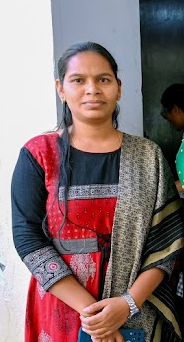
V.Soujanya
M.A(Telugu)
G.Prathibha is a Degree Lecturer in the Department of Mathematics. She highly experienced and dedicated educator with over two decades of teaching experience, reflecting her long-standing commitment to academic excellence and the holistic development of students. She graduated as a topper in her degree, demonstrating a strong academic foundation, discipline, and mastery of her subject. Over the course of her career, She designed and delivered comprehensive curricula tailored to students’ learning needs. Her experience has enabled her to guide students in research, critical thinking, and professional development. She ensure that students are well-prepared for higher education and future careers. Overall, her career reflects a dedication to education, student development, and the reputation of the institution she serve.

G.Prathibha
M.Sc,TG-SET
G.Shirisha is a Degree Lecturer in the Depatment of Business Management. She qualified for the Junior Research Fellowship (JRF) in Management. In addition, She have been selected for the Ph.D. entrance examination at the University of Hyderabad (Hyderabad Central University), one of India’s premier institutions for higher education and research. Through doctoral studies, She aim to further strengthen,her research capabilities and methodological expertise. She is eager to contribute to meaningful scholarly discussions and explore innovative solutions in management. Her goal is to generate insights that can enhance both theoretical understanding and practical applications in the field. Shecommitted to advancing knowledge while maintaining a strong focus on academic rigor.
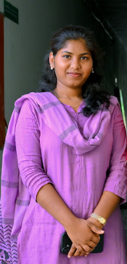
G.Shirisha
MBA,UGC-NET & JRF,TG-SET
K.Shilpa Rani is a Degree Lecturer in the Department of Business Management. She worked as a Human Resource Trainee at TCD-Technocrats Domain Systems, a software company, where She gained valuable practical exposure to various human resource functions within a professional corporate environment. During this period, She developed an understanding of HR practices such as recruitment support, employee coordination, documentation, and organizational communication, which strengthened her knowledge of human resource management in the IT sector. In addition to her professional experience, She successfully completed a certification course in Soft Skills and Personality Development through SWAYAM, an initiative supported by the University Grants Commission. Furthermore, She qualified for the UGC-NET, demonstrating her strong academic competence and eligibility for teaching and research in the field of management.
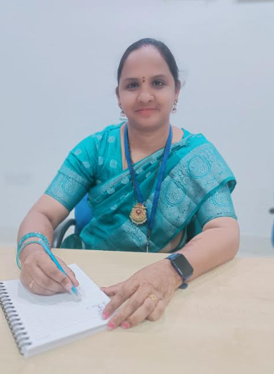
K.Shilpa Rani
MBA,UGC-NET
B.Swapna working as a Staff Nurse.She have 5 years of experience working in a Primary Health Centre. During this time, She gained valuable exposure to patient interaction, healthcare coordination, and the functioning of public health systems. She have also been actively involved in serving her local society for the past ten years. Through this involvement, She participated in various community welfare and development activities. She engagement allowed to work closely with people from diverse backgrounds and contribute to social initiatives. They also enhanced her sense of responsibility toward community development.

B.Swapna
GNM
J.Usha Rani is a faculty in the Department of Fashion Technnology. She have 2 years of professional experience in fabric marketing, where She gained practical knowledge of textile products, market trends, and customer engagement strategies. This role helped to develop skills in sales, communication, and understanding consumer preferences within the textile industry. In addition to her industry experience, She worked as a Degree Lecturer in the Department of Fashion Technology for four years, where She taught and mentored students in fashion design, textile science, and related subjects. During this period, She was involved in curriculum planning, academic guidance, and organizing workshops to enhance student learning. These experiences allowed me to interact with diverse groups and understand their professional and social needs. It also enhanced her ability to apply practical knowledge in an academic setting. Overall, she combined experience in fabric marketing and teaching reflects her commitment to professional growth and community development.

J.Usha Rani
B.Tech(Textile Technology)
B.Soniya is a faculty in the Department of Fashion Technology. She have 1 year of experience working as a Degree Lecturer in the Department of Fashion Technology. During this time, She actively contributed to curriculum delivery, lesson planning, and classroom management, ensuring a productive learning environment.She also mentored students in practical projects and assignments, helping them develop both technical and creative skills.She collaborated with colleagues to improve departmental processes and promote knowledge sharing. Her teaching experience strengthened her communication, leadership, and organizational abilities. It also reinforced her commitment to fostering professional growth and skill development in students.

B.Soniya
B.A.H(Fashion Design)
S.Gayathri is a faculty in the Department of Fashion Technology. She have 1 year of professional experience working as a Textile Designer in the Handloom Department in Siddipet, where She was involved in designing and developing traditional and contemporary textile patterns. During this period, She gained hands-on experience with fabric selection, color coordination, and pattern creation, ensuring high-quality and market-relevant designs. She contributed to enhancing the aesthetic appeal and functionality of handloom products. This experience allowed to develop strong creative and technical skills in textile design.Working in this environment strengthened her problem-solving, teamwork, and project management abilities. Overall, her tenure in the Handloom Department reflects her dedication to creativity, craftsmanship, and the promotion of traditional textile arts.

S.Gayathri
B.A(Houns) Fashion Design
V.Gangavathi is a Degree lecturer in the Department of Commerce. She have accumulated a total of 15 years of teaching experience in the field of higher education. She served as a Degree Lecturer for 10 years, where She was actively involved in delivering academic instruction, guiding students, and contributing to their overall academic development. She worked as a Junior Lecturer for five years. She tenure at MJPTBCWREIS Sangareddy has provided with valuable institutional and teaching experience. These years of service have helped to develop strong communication, mentoring, and classroom management skills.
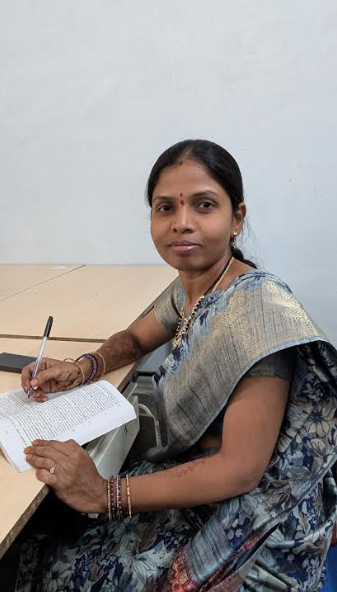
V.Gangavathi
M.Com,B.Ed,TG-SET
K.Vanisri is a Degree Lecturer in the Department of Botany. She has completed her M.Sc in Botany from University College of Science, Osmania University. She has completed B.Ed from Osmania University.She has qualified TS-SET(2022). She began her teaching career in Government sector in 2018 as a TGT in Bioscience at TSWREIS in Addagudur.In 2019, She joined MJPTBCWREIS as a Junior Lecturer in Botany and served in this role until 2024. In 2024, She was appointed as a Degree Lecturer in Botany at MJPTBCWRDC,Hyderabad. In this role,She continued to guide undergraduate students with a focus on scientific thinking and academic excellence. Her professional journey reflects continuous growth and commitment to quality education. In recognition of her contributions in teaching, "She was honored with the Best Teacher Award" by the District Collector of Nagarkurnool on September 5, 2022.

K.Vanisri
M.Sc,B.Ed,TS-SET
Dr. A. Latha is a Degree Lecturer in the Department of Business Management.She hold UGC-NET, AP-SET, and TS-SET (Commerce) qualifications, which demonstrate her strong academic foundation and eligibility for higher education teaching and research. In 2017, She was awarded a Ph.D. She have authored a book titled “A Study on Stock Market Volatility with Reference to Equities,” which explores fluctuations and analytical perspectives in the stock market. In addition to her academic publications, She have also contributed to innovation through a UK patent titled “Computing Device for Financial Volatile Share Market Business Analytics Using AI.” This work integrates artificial intelligence with financial market analysis to improve decision-making. She have actively published several research papers in both national and international journals. Her research contributions cover topics related to finance, stock markets, and business analytics. She have also presented papers at various national and international seminars and conferences. These academic engagements have helped broaden her research perspective and scholarly collaboration.
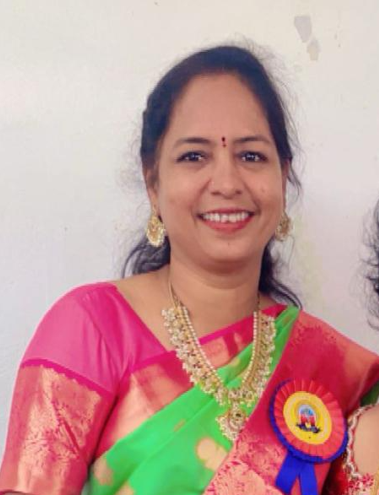
Dr.A.Latha
Ph.D(Business Management)
A.Deepthi is a Degree Lecturer in the Department of Zoology. She have over 7 years of experience as a Degree Lecturer. Her academic journey has been enriched by pursuing a Ph.D. at Osmania University, where her research focused on Ecotoxicology, emphasizing the study of environmental contaminants and their effects on ecosystems. Throughout her career,She have demonstrated a commitment to fostering an engaging learning environment and promoting scientific inquiry among students. She have been actively involved in designing practical laboratory sessions, supervising research projects, and integrating modern pedagogical methods to enhance learning outcomes. Her research work has allowed to collaborate with interdisciplinary teams, contributing to publications and presenting findings at national conferences. She have also participated in workshops, seminars, and faculty development programs to refine her skills and knowledge. Passionate about both teaching and research, She aim to inspire the next generation of environmental scientists while advancing understanding in ecotoxicology.

A.Deepthi
M.Sc,B.Ed,TS-SET
Dr.Ranjitha Chul is a Degree Lecturer in the Department of Statistics. She was dedicated academic professional with 9 years of teaching experience at the degree level, committed to excellence in both education and research. She have been awarded a Ph.D., complemented by an M.Sc. in Statistics, where She was honored with a gold medal for outstanding academic performance. She have successfully cleared TS-SET and UGC-NET, and She was a proud recipient of the INSPIRE Scholarship, recognizing her research potential. Her research contributions include 2 international publications, with one indexed in Scopus, reflecting her active engagement in the global scientific community. She have attended 8 international and national conferences to present her work and stay updated with emerging trends in her field. Additionally, She actively organize various conferences and workshops, contributing to academic discourse and professional development. Life member of “Indian Society for Probability and Statistics”. Life member of “Society for Development of Statistics” .
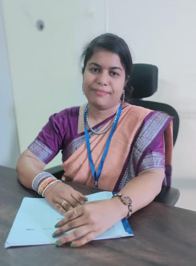
Dr.Ranjitha Chul
Ph.D(Statistics),TS-SET,UGC-NET.
M.Prasanna working as a Staff Nurse. She have successfully completed a 5-month certified training program at Cadabams Rehabilitation Centre, a reputed center specializing in mental health care and psychiatric rehabilitation. This training provided comprehensive exposure to the management and rehabilitation of individuals with mental illnesses. In addition, She gained practical experience in handling COVID-19 cases during the pandemic, where She actively contributed to patient care and emergency response. She also have 6 months of professional experience working in the Emergency Department at KIMS Hospital, where She assisted in managing critical and emergency cases. Furthermore, She completed 1 year of service in the Emergency Department at Medinova Hospital, gaining extensive exposure to emergency medical care and patient management. These experiences have strengthened her clinical skills, decision-making abilities, and teamwork in high-pressure healthcare environments. She developed strong competencies in patient assessment, emergency response, and coordination with multidisciplinary medical teams.

M.Prasanna
B.Sc Nursing
Katru Rinny working as Junior Assistant. She was appointed through TGPSC Group‑4 Services, a highly competitive examination conducted by the Telangana Public Service Commission. Her selection through TGPSC demonstrates her commitment to contributing effectively to public administration and government service. Through this opportunity, She has gained valuable experience in understanding administrative procedures and public service responsibilities. She remains committed to maintaining transparency, accountability, and professionalism in all assigned duties. This achievement represents an important milestone in her career and reflects her aspiration to serve society through responsible governance. She continues to strive for excellence while contributing positively to the functioning and development of public institutions.

Katru Rinny
B.Tech(Electrical & Electronics Engineering)
Banoth Swathi working as Junior Assistant. She was appointed through TGPSC Group‑4 Services, a highly competitive examination conducted by the Telangana Public Service Commission. Her selection through TGPSC demonstrates her commitment to contributing effectively to public administration and government service. Through this opportunity, She has gained valuable experience in understanding administrative procedures and public service responsibilities. She remains committed to maintaining transparency, accountability, and professionalism in all assigned duties. This achievement represents an important milestone in her career and reflects her aspiration to serve society through responsible governance. She continues to strive for excellence while contributing positively to the functioning and development of public institutions.

Banoth Swathi
M.A(Sociology)
Maram Charitha working as Junior Assistant.She was appointed through TGPSC Group‑4 Services, a highly competitive examination conducted by the Telangana Public Service Commission. Her selection through TGPSC demonstrates her commitment to contributing effectively to public administration and government service. Through this opportunity, She has gained valuable experience in understanding administrative procedures and public service responsibilities. She remains committed to maintaining transparency, accountability, and professionalism in all assigned duties. This achievement represents an important milestone in her career and reflects her aspiration to serve society through responsible governance. She continues to strive for excellence while contributing positively to the functioning and development of public institutions.

Maram Charitha
M.A(Political Science)
B.Divya Jyothi is a faculty in the Department of Data Science. Her research paper titled “Liver Cancer Classification” was successfully published in the International Research Journal of Engineering and Technology (IRJET), a reputable peer-reviewed journal that publishes innovative research in engineering and technology fields. The methodology includes data preprocessing, feature extraction, and classification techniques to improve diagnostic accuracy. The results demonstrate the potential of intelligent systems in supporting medical diagnosis and reducing human error. The publication of this work in IRJET reflects its academic relevance and contribution to the field of medical data analysis. Overall, the paper provides valuable insights into the application of computational methods for liver cancer detection and classification.

B.Divya Jyothi
M.Sc(DataScience)
J. Maheshwari is a faculty in the Department of Financial Accounting. She have successfully qualified for a Doctor of Philosophy (Ph.D.), demonstrating strong academic expertise and a commitment to research and higher education. She possess 2.5 years of teaching experience at Telangana Social Welfare Residential Degree College for Women. In addition,She gained 5 months of teaching experience at MJPTBCR Degree college. These experiences have significantly enhanced her ability to contribute effectively to teaching, research, and academic service.
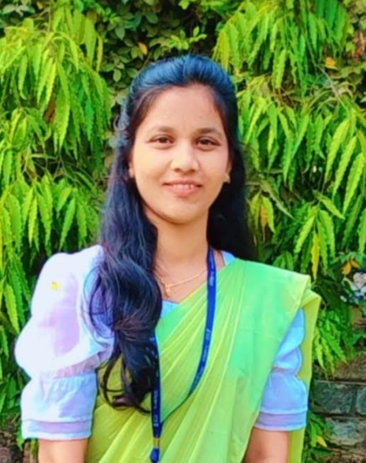
J.Maheshwari
M.Com(Finance)
M.Ravali is a faculty in the Department of Physics. Her specialization in Electronics and Instrumentation from University college of science,Osmania University. Worked as Junior Lecturer in Megha Junior College,ECIL(2021-2022).She possess 5 years of teaching experience as a Degree Lecturer in Physics at the undergraduate level. Worked as Degree Lecturer in Omega degree college,ECIL(2022-2023). During my teaching career, She have been actively involved in delivering comprehensive lectures in core physics subjects and specialized topics related to electronics and instrumentation Through her experience.

M.Ravali
M.Sc(Physics),B.Ed
Salvadi Mounika is a faculty in the Department of Nutrition. Her postgraduate qualification in M.H.Sc. (Food Science and Nutrition) inUniversity of Agricultural Sciences,Dharwad. She have 3 years of teaching experience at MJPTBCWR Degree College in Hyderabad. She is committed to fostering awareness about balanced nutrition, food safety, and healthy lifestyle practices. She has cleared first stage screening test in the recruitment of technical officer conducted by FSSAI and also selected for 1:2 ratio for Food Safety officer conducted by TGPSC. Her experience has helped in developing a strong teaching, mentoring, and communication skills. She consistently strive to maintain high academic standards and encourage critical thinking among students. She aim to contribute effectively to academic development and student success in the field of Food Science and Nutrition.

Salvadi Mounika
ICAR-JRF,UGC-NET
D.Mani Srinivas D.Mani Srinivas is a faculty in Nutrition Department. Worked as a Dietitian at KIMS HOSPITAL(SunShine). She have 4 years of experience as a Degree Lecturer in Nutrition at MJPTBCWRDC, Hyderabad. She also gained 6 months of professional experience at AIIMS(All India Institute of Medical Sciences) College, where she contributed to academic and institutional activities related to the field of nutrition. This experience allowed to further strengthen her knowledge and practical understanding of nutrition education. She have developed strong communication, teaching, and organizational skills through these roles.

D.Mani Srinivas
M.Sc(Nutrition & Dietetics)
T.Vinutha is a faculty in the Department of English. She have 10 years of professional experience working in the Gurukul educational system. She have 5 years of experience as a Counsellor at Dr. B. R. Ambedkar Open University. This role helped to develop strong communication and mentoring skills. She have consistently worked to motivate and support students from diverse educational backgrounds. Her experience reflects a strong commitment to education, student success, and academic excellence.

T.Vinutha
M.A(English),B.Ed
G.Vanitha is a faculty in the Department of English. She have 5 years of experience as a Degree Lecturer in English. She have one year of experience in SSC Hyderabad, starting at Lorvens Convent High School, Following this, She served 1 year at St. Joseph’s Grammar High School, SSC Hyderabad. She also gained 2 years of experience in SC Welfare, Nalgonda, serving as a Degree Lecturer, where She focused on educational support and development for underrepresented communities. She submitted Project on "How Study Skills helps students to improve their learning".

G.Vanitha
M.A(English), B.Ed
Dr. P. Anitha is working as a Physical Director in the Department of Physical Education at MJPTBCWR Degree college with 9 years of experience in sports training, coaching, and physical education. She completed her schooling and higher education in Telangana and Andhra Pradesh, developing a strong background in sports and martial arts. She earned her Ph.D. in Physical Education from Osmania University, Hyderabad. Her research topic was “Training on Development of Physical Fitness Components among Female Taekwondo Players.” She has also qualified the TS-SET (Telangana State Eligibility Test). Dr. Anitha holds a 1st Dan Black Belt in Taekwondo and a Black Belt in Kung-Fu. She possesses an NCC “C” Certificate and participated in the Independence Day Parade at Secunderabad on 15th August. She has represented in All India Inter-University competitions in Taekwondo and Pistol Shooting. She previously worked as a PGT (Physical Education) at an Army School and received 3 Appreciation Certificates for Excellence in Results in AISSCE. Under her coaching, her team won the CBSE South Zone Taekwondo Overall Championship in the Under-17 Girls category. She has attended many seminars and conferences, published research articles, and authored a book titled “Fitness in Combat Sports: Training Insights from Boxing, Taekwondo, Wrestling and Judo” published on 20 May 2025.
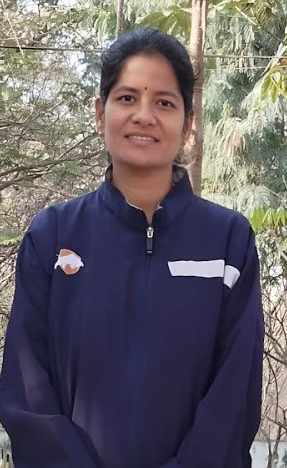
Dr.P.Anitha
Ph.D(Physical Education)
A. Baby is working as a Physical Director in the Department of Physical Education at MJPTBCWR Degree college. Her Professional qualification M.P.ED from Osmania University in 2014-2016. Bachelore of Physical Education (B.Ped) from Palamuru University in 2013. She qualified AP-TET in 2011. She had 7 years, 4 months of experience in coorporate college. She has also qualified TS-SET in 2023. Job Achievements : DSC in 2024, Appointed as PET in MJPTBCWREIS, also appointed also Junior college TTWREIS as a Physical Director. She has awarded Silver medal in M.A(Economics). Sports achievement South west zone from Sri Krishna Devarayula University. She published more than three research articles in reputed national and international journals(International research Journal of Education and Technology). She Published a Book: "GET FIT NEVER QUIT". She was Appointed as Physical Director in MJPTBCWR Degree college.
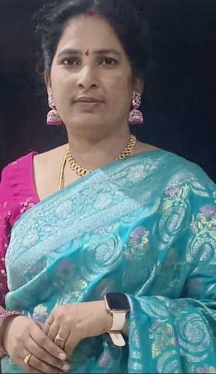
A. Baby
M.Ped,M.A(Economics),B.Ed
Manjula is a Degree Lecturer in the Department of Mathematics at MJPTBC Welfare Residential Degree College for Women, Hyderabad.
She holds an M.Sc. in Mathematics from Osmania University and has qualified the TS-SET examination. She has more than 15 years of teaching experience in higher education institutions. She previously worked at Sri Indu College of Engineering and TKR College of Engineering, teaching Engineering Mathematics. She also holds a patent related to structural and fluid dynamics. She has successfully completed several NPTEL certification courses to enhance her teaching and subject knowledge. Her dedication to teaching earned her the Best Faculty Award. She has also received multiple Gold Medals for her academic excellence during her studies.

Manjula
M.Sc(Mathematics),TS-SET
K. Anuradha is a Degree Lecturer in the Department of M.A. in Telugu, is a dedicated Degree Lecturer passionate about teaching and promoting Telugu literature. She focuses on academic excellence while helping students appreciate the cultural and literary values of Telugu. Known for her commitment and supportive nature, she encourages creativity, confident expression, and a love for literature. Her guidance has helped many students improve their language skills and respect for their mother tongue. Through her dedication, she continues to inspire students and contribute to education and Telugu literary growth.

K. Anuradha
Sana Firdous is a faculty in the Department of Computer Science. She completed her M.Tech in 2015 with First Class Distinction. She has published a research paper titled “Preserving Location Privacy in Geo-Social Applications” and brings with her 2 years of teaching experience. Currently, she is serving as a Guest Lecturer in Computer Science and Engineering at MJPTBCWRDC. Her passion lies in teaching, research, and knowledge sharing, and she continues to inspire students through her dedication to academic excellence and innovation.

Sana Firdous
M.Sc(DataScience)
G. Thirupatha is a faculty in the Department of Finance. She holds a Master of Commerce (M.Com) degree from the University College of Commerce and Business Management, Kakatiya University. He has qualified both the UGC NET and TS SET in Commerce, reflecting his strong academic foundation and commitment to excellence in the field. With 2 years of teaching experience at the degree college level, he has guided students in understanding commerce concepts while fostering an engaging and practical learning environment. Passionate about education, G. Thirupatha continues to contribute to the academic community and inspire the next generation of commerce professionals.
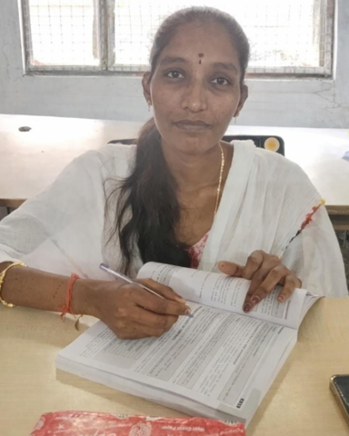
G. Thirupatha
M.Com(Finance)
P. Annapurna is a Degree Lecturer in the Department of Chemistry. She is currently working as a degree lecturer in the Department of Chemistry at MJPTBCWRDC (W). She completed her M.Sc. in Chemistry in 2013 from University College of Science, Osmania University and her B.Ed in 2014 from Palamur University. She has qualified the State Eligibility Test and possesses 9 years of teaching experience. Her professional journey includes working as a contract school assistant teacher for one year (2017–2018) at Ashram School, Kotha Pally, Mahabubnagar, as a trained graduate teacher for 1 year (2018–2019) at Social Welfare Residential School, Marikal, and as a junior lecturer in Chemistry for 5 years (2019–2024) at MJPTBCWRJC. Since 2024, she has been serving as a degree lecturer at MJPTBCWRDC (W). She is skilled in mentoring, lab management, and innovative, collaborative teaching practices.

P. Annapurna
M.Sc(Chemistry)
Mavooru Navaneetha Lakshmi is a Degree Lecturer in the Department of Commerce. She holds an M.Com from Osmania University and an M.B.A in Finance from Pondicherry University. She has qualified for the UGC-JRF in Commerce(2019) and UGC-NET in Management(2025). A passionate teacher with around 2 years of experience, She handles core commerce papers such as Cost Accounting,Advanced Accouting, Income Tax as well as Business Analytics papers like Data-driven decision making, Data Analytics essentials and Advanced Data Visualizations. She is currently pursuing her Ph.D in part-time mode from the University of Hyderabad, having received JRF and SRF till July 2024. Her research interests lie in Financial Literacy,Sustainable Finance and Behavioural Finance, the topics on which she has presented papers at various International Conferences. Being an active learner she has also attended several workshops and FDPs on Research methodology and Financial modelling.
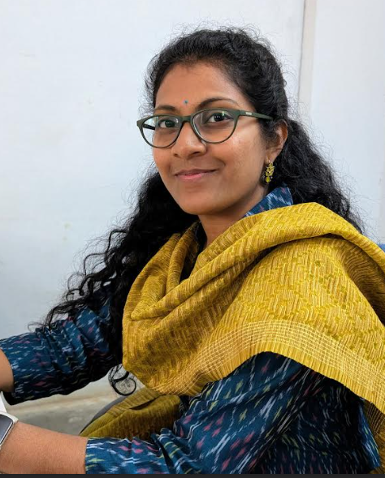
Mavooru Navaneetha Laxmi
M.Com,MBA(Finance),UGC-JRF(Commerce),UGC-NET(Management)
K. Shirisha is a faculty in the Department of Chemistry. She completed her M.Sc. in Chemistry with a specialization in Organic Chemistry from Palamuru University. She joined MJPTBCWRDC as a faculty member 4 months ago. She is deeply passionate about teaching and is committed to fostering students’ academic development in Chemistry. Through her dedication, she aims to enhance students’ understanding of the subject and contribute positively to their educational growth.

K.Shirisha
M.Sc(Chemistry)